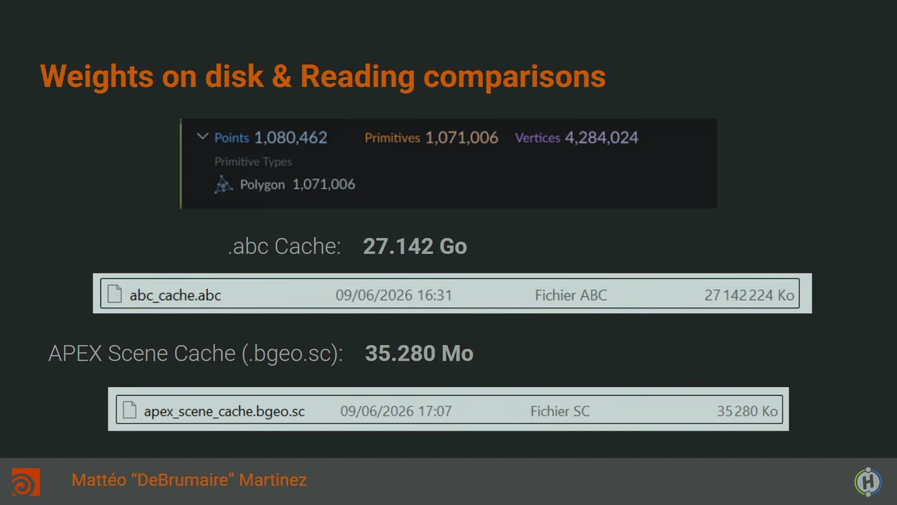

APEX を現場で使う — Paris HUG の講演
出典: APEX in Houdini: Evolving Animation Workflows for Production | Mattéo Martinez | Paris HUG 2026 （Paris HUG 2026 の講演 / 講演者 Mattéo “DeBrumaire” Martinez さん（Brand Studio Paris / CFX テックリード）/ 41:47 / 英語・一部フランス語）。 このページは、上記の動画を見ながら自分用にまとめた日本語の学習メモです。SideFX 公式の翻訳ではありません。 キャッシュサイズの数値はスライドから直接読み取ったものです。
この講演の位置
SideFX の人ではなく外部ユーザーの視点です。 講演者は Brand Studio Paris の CFX テックリードで、 実際の制作現場で APEX を使っている人の話になっています。
内容は4つに分かれます。
- キャッシュの話（数字がいちばん衝撃的な部分）
- APEX / KineFX でのリギングの実際
- 実際に作った現場ツール3つ
- The Synthetic Approach — この講演の核心にある主張
Q&A（29:30 以降）の相当部分がフランス語なので、そこは要点のみにしています。
1. APEX Scene Cache の大きさ
Houdini ではアニメーションシーンの中で直接ラグドールシミュレーションを回せます。 デモではキャラを6体ラグドールで放り込み、 キャッシュが重くなるようわざとモデルにサブディビジョンを追加しています （最適化で有利に見えないようにするため）。
そして APEX Scene Cache はシーンの中身をすべてキャッシュします — アニメーションレイヤー、キー、ラグドールシミュレーションに使ったパラメータそのもの、 そしてコンストレイントまで。 再シミュレーションするとアニメーターが得たのと完全に同じ結果が出ます。

| 項目 | 値 |
|---|---|
| Points | 1,080,462 |
| Primitives | 1,071,006 |
| Vertices | 4,284,024 |
.abc | 27.142 GB |
APEX Scene Cache（.bgeo.sc） | 35.280 MB |
講演では口頭で「745倍小さい」と述べていますが、 スライドの数値から計算すると約769倍になります。どちらにせよ3桁です。
読み込み速度は ABC キャッシュに近く、スケルトンも同時に書き出しています。 この大きなシーンでは ABC より速いとのことです。
講演者が考えてほしいと言っていること
単に容量が小さいという話ではなく、この差が何を意味するかです。
- ワークフロー
- プロジェクトのアーカイブ
- サーバの容量
- そして FX・CFX・アニメーションのアーティストが同じ時間でずっと多くの道具を使えるようになること
弱点も自分で明言している
この方式は「制作工程のほぼすべてを Houdini で行う」ワークフロー向けです。 そこは講演者自身がはっきり言っています。
ただし「多くのプロダクションが CFX・FX、そして実際にはライティングとレンダリングまで Maya から Houdini に移りつつある」という状況認識を添えています。
2. リギングの実際 — リグはグラフである
リグはグラフで、各ノードがコントローラです。 そしてグラフの作成・変更は別のグラフが実行する操作によって行われます。
例として、スケルトンの全ポイントを探して変換を記述するノードを作り、親子付けする、という流れが挙げられています。 「リグを作るグラフ」を作るという二階建ての構造です。
APEX Script
大きなリグを手作業で組むのは大変なので、APEX Script（APEX で速く書けるよう調整された Python）を使います。
使いこなせるようになると本当に素晴らしい。
200ノードを対応するノードに繋ぐループを書けて、コードは非常にコンパクトだそうです。 講演者はお気に入りスクリプトの小さなライブラリを持っています。
Auto Rig Component と Auto Rig Builder
コードで適用するか、Auto Rig Builder で視覚的に適用します。 Unreal Engine の同機能とよく似ていて、コンポーネントをビューポートのスケルトンにドラッグするだけです。
非技術系のプロファイルに有用で、よく使うリグ操作の網羅的なリストが既にあります。
Fuse component — 手で試作する道具
数時間のスクリプティングに入る前に手で試作したいときのためのものです。
- 単純な IK コンポーネントを作ります（追加ノードはオレンジ表示になります）
- 手作業の変更をミラーできます（Fuse component が仕組みの理解を代行します）
- IK を腕など別の場所にリマップできます
手続き的スキニング
「スケルトン作成とスキニングには常に人の手が必要」という見方は正しい、と認めた上で、 「だが手作業しかできないという意味ではない」と続けます。
実例として、首に細かいジオメトリのセルがあって難しいモデルが挙げられます。 高解像度のクラスタではスムージングが均質にならず、 ベベルのせいで手描きは精度を要求されます。
| 手順 |
|---|
| 1. Convex Hull を作る |
| 2. リメッシュする |
| 3. 複雑なジオメトリの代わりにハルをキャプチャする |
| 4. そのキャプチャをスムージングする |
| 5. 元のジオメトリに転送する |
「かなり古典的な手法」だと本人も言っていますが、要点は手法の新しさではなく 状況ごとに最適な技法が必ずあるということです。
3. 現場で使われているツール3つ
この部が個人的にいちばん貴重だと思いました。 アーティストからの反応まで語られています。
ツール1 — 服をアートディレクションするクイックリグ
目的は、CFX アーティストがショットの都合に合わせて服をアートディレクションすることです。 シミュレーション前に結果をバイアスするのに使います。
将来的にはシミュレーション後の補正にも使い、 シミュレーションを最終成果物ではなく作業の出発点にしたいと述べています。
| 入口 | ユーザーステートで点を作って好きに繋ぐだけ |
| 変換 | ツール内部のインタープリタがそのジオメトリを使えるオリエント済みスケルトンに変換します |
| キャプチャ | KineFX のキャプチャノードのワークフロー（または自作の高速版）を使います |
| 解釈 | 動的に解釈します。背骨をメインスケルトンにし、 浮いているジョイントはメインリグに含めずジオメトリ表面にスナップさせます → リグの変形の上にもう一層の変形が乗り、制御精度が上がります |
| 布らしさ | Wrinkle Deformer コンポーネントのおかげで布のように振る舞い、キャラクターの肌と衝突します |
| 拡張 | Auto Rig Builder と組み合わせて、描いたものに新しい挙動（例: 単純な wave deform）を足せます |
アーティストの反応: ワークフローに慣れると、使える制御と可能性の量を気に入る。 ショットごとに適応して最大限の制御を得られる。
ツール2 — プロキシをアニメートするツール
対象は袖・裾・ケープ・ポニーテールなど、アニメーターが既に（部分的に）動かしているものです。 問題はジオメトリが「ついてくる」だけでなく「変形する」場合で、扱いが難しくなります。
- ツールはレスト位置のジオメトリを取り、レストと変形後を比較して動きを理解します
- そしてジオメトリを貫くリグを作り、その変形をスケルトンにベイクします
- ツールに入るとアニメーションレイヤーが既に用意されていて、 プロキシの動きから理解した内容が全部そこに入っています
- そこに独自のロジックを追加できます（例: ポニーテールをもっと制御するために spine の auto rig コンポーネントを足す）
APEX シーンの中で動いているので、ネイティブの APEX シーンツールがすべて使えます — Full Body IK、そして Ragdoll。
Ragdoll のプロパティをツールの中でシミュレーション前に設定できます。 たとえばプロキシの根元は非常に硬く、先端はずっと滑らかに（衝突込みで）。
いちばん語る価値のある反応がここです。
このツールがある前は、アーティストは自分でプロキシをアニメートするのを嫌がっていた （それまでは遥かに難しかったので慣れていなかった）。 慣れると制御の差を実感し、速く結果を出すために頻繁に戻ってくる。
ツールの評価が「嫌がっていたことを自分からやるようになった」という形で語られるのは、 なかなか読めない話だと思います。
ツール3 — リグ同士を合体させる試作
- リグのトランスフォームと名前を操作して、同じリグを複数回マージできます
- ほぼ基本ノードだけで作られています（rename、repose、auto rig の fuse graph）
- 用途は合体・分離するロボットの番組。 3体しかいないシリーズのために100体分のリグを管理する必要がなくなります — 合体させればよい
この部から学べることとして、講演者は 「APEX / KineFX / Houdini 環境の柔軟性は、キャラクター制作以外にも使え、 複数の職種が使え、リギングとアニメーション以外の部門でも使える」とまとめています。
4. The Synthetic Approach — 講演の核心
歴史の整理
LightWave 3D が1990年、Blender が1994年、Maya が1998年。 我々は CGI アニメーション産業のまだ非常に初期にいて、技術があってもどう進めるべきか分かっていない。
CGI 初期の70年代にはコントローラではなくスプレッドシートでアニメートしていたそうです。 つまり技術だけでなく技法そのものが発見されつつある — インターフェース、機能、アニメーションスライダ、キャラクターピッカー。
当時存在した3Dソフトはすべて、発見された技法をその都度パッケージに足していきました。 技術とプラグインの層が重なっていった。 Houdini だけが遅れていて、Houdini でどうしてもやる必要があるプロダクションを止めないための 小さなアニメーション／リギングのパッケージだけを提供していた。
主張の核心
他のソフトにとってこの全体を変えるのはリスクが高い — コミュニティが既にその層・ショートカット・論理の上に構築されているから。 すべてうまく動いているのに変えるのは、ある意味で不合理に見えます。
だから Houdini は独自の立場にある。 アニメーションの30年で上手くいったものすべてから着想を得て、ゼロから作れる。 これを彼は synthetic approach（統合的アプローチ）と呼んでいます。
遅れていたことが、そのまま利点になっているという読みです。 負けている側の言い訳ではなく、なぜ後から入るほうが有利なのかを説明する形になっているのが面白いところです。
統合の実例
| 機能 | 内容と着想元 |
|---|---|
| Motion Mixer | クリップをタイムラインでブレンドします。CG ダブルだけでなく アニマティックの試作・3Dストーリーボード・レイアウトの速いリタイムにも有用。 「おそらく Motion Builder が着想元。インターフェースが非常によく似ている」 |
| フリップブックでリタイム | プレイブラスト上で直接リタイムでき、アニメーションシーンのコントローラも更新されます。 フィードバックに有用。Shotgun や ftrack と繋げられないかと考えているそうです |
| animBot 相当が標準に | アニメーションスライダなど。「驚いたことに Maya にはネイティブのものが無い」 |
5. スタジオ移行の話（29:30 以降）
ここはツールの話ではなく組織の話なので、内容として独立して価値があります。
Camille Palin さん（Brand の CFX スーパーバイザー）が 「言われたことは全部本当だ」と支持を表明した後、こういう質問が出ます。
多くの会社がライティング・レンダリング・FX に Houdini を採用している。 しかしアニメーションは到達できない城塞のようで、そこだけ Maya のワークフローが残る。 移行を促すには何が足りないのか。
その答え
「100万ドルの質問」と前置きした上で、スタジオを回って話した経験からこう答えています。
一番足りないのは「その技術に触ったことがあり、スタジオを安心させられる技術アーティストが内部にいること」。 APEX にまだ足りない機能はあるが、それは本当のブレーキではない。
本当のブレーキはスタジオが怖がっていること — Maya は20年そこにあり、大きな変化になる。
機能の不足ではなく人と心理の問題だと言い切っているのが印象的でした。
33:22 以降（フランス語）では、今 Maya に全振りしているスタジオが段階的に APEX へ移るための推奨、 37:04 ではスタジオを安心させる方法（役割を段階的に分けて、あとは一歩ずつやる）が語られています。 40:44 で講演者は VoxelFX と共同でフルのトレーニングコースを制作中だと述べています。
この講演から持ち帰るもの
- APEX Scene Cache は 108万ポイントのシーンで 35.280 MB。同じシーンの
.abcは 27.142 GB で、約769倍の差です - キャッシュにはアニメーションレイヤー・キー・ラグドールのパラメータ・コンストレイントまで入り、再シミュレーションで完全に同じ結果が出ます
- ただし「ほぼ全工程を Houdini で行う」ワークフロー向けだと講演者自身が明言しています
- リグはグラフで、それを作るのも別のグラフです。APEX Script でコンパクトに書けます
- Fuse component は、スクリプトを書く前に手で試作するための道具です
- 手続き的スキニングの実例: Convex Hull → リメッシュ → キャプチャ → スムージング → 転送
- 現場ツール3つの評価がアーティストの反応として語られているのが貴重です。とくに「嫌がっていた作業を自分からやるようになった」という話
- 核心の主張は synthetic approach — 遅れて入るからこそ、30年の成果からゼロで作れる
- 移行の障害は機能ではなく「安心させられる技術アーティストが内部にいるか」だという診断